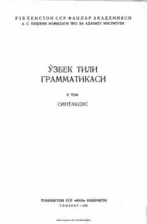

OTOʻzbek tilining sintaksis nazariyasi va qoidalariga bagʻishlangan ilmiy-akademik qoʻllanma.
Ushbu akademiya nashri oʻzbek tilining sintaksis masalalariga bagʻishlangan boʻlib, soʻz birikmasi, содда ва қўшма гапларнинг хусусиятларини атроflicha tahlil qiladi. Kitobda sintaktik aloqalar, gap boʻlaklari hamda ularning vazifalari ilmiy jihatdan yoritib berilgan. Asar oliy oʻquv yurtlari filologiya fakultetlari talabalari va mutaxassislar uchun moʻljallangan.